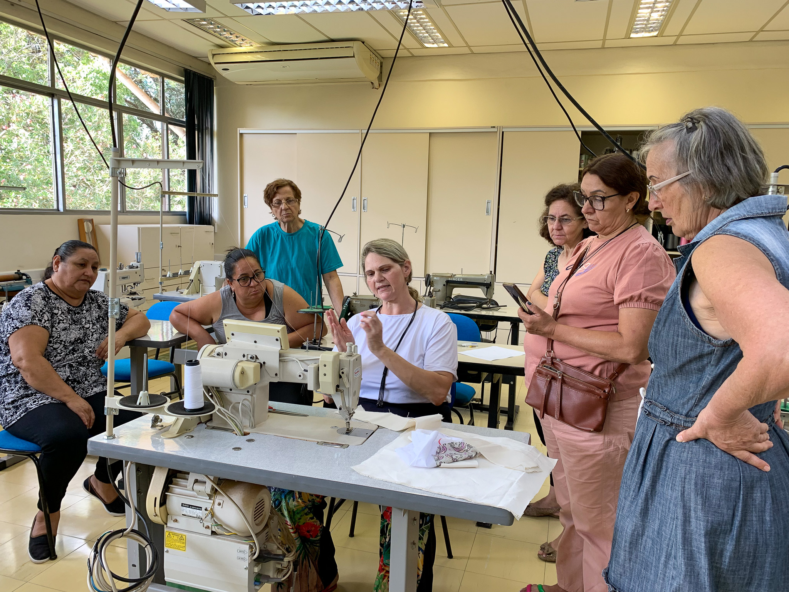

Educação para o Futuro
Educação
Oferecemos cursos técnicos e aulas de reforço para mais de 500 alunos anualmente.
Ver VagasConheça os pilares do nosso trabalho e como você pode participar de cada um.
Oferecemos cursos técnicos e aulas de reforço para mais de 500 alunos anualmente.
Ver Vagas
Foco na prevenção e acesso à informação de saúde para toda a família.
Apoiar Projeto
Treinamento de costura e artesanato para mulheres da comunidade.
Ver VagasSua paixão e suas habilidades são o combustível da nossa missão. Temos oportunidades para diversas áreas!
Cada contribuição, grande ou pequena, garante que nossos projetos continuem ativos.